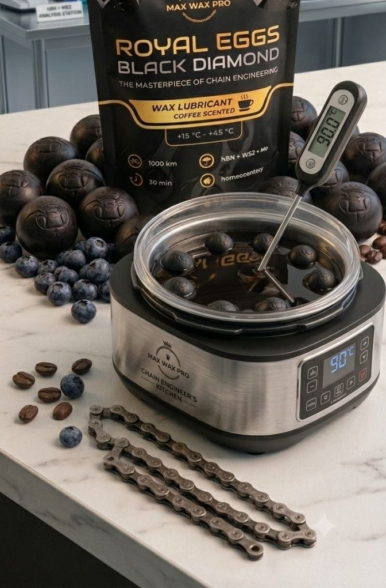

Три прості кроки від сухого чистого ланцюга до тихого й швидкого приводу. Весь процес займає близько 30 хвилин, разом з охолодженням.

Розігрійте сфери у воскоплаві, мультиварці чи ковшику до 90–95°C. Використовуйте термометр: точна температура важлива для правильного проникнення воску в ланки.
Опустіть підготовлений сухий ланцюг у розплав на 2–3 хвилини, легко погойдуючи для рівномірного просочення кожної ланки й ролика.
Дістаньте ланцюг, дайте йому охолонути, розімніть ланки руками або прокруткою і встановіть назад на велосипед. Ланцюг готовий до виїзду.
Порада: якщо ланцюг новий, спочатку скористайтесь дегризером з комплекту, щоб перетворити заводське консерваційне мастило в олеогель і зняти його без хімічного запаху. Це займає лише 10 хвилин і суттєво покращує зчеплення воску з металом.